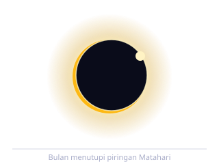
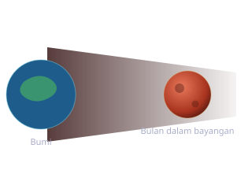
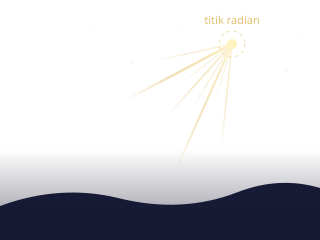
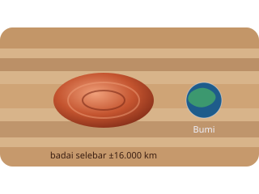
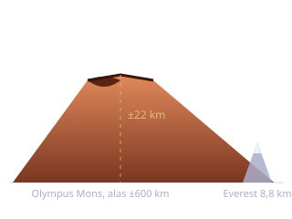

Fenomena 01
Gerhana Matahari
Bulan lewat tepat di depan Matahari
Gerhana matahari terjadi ketika Bulan berada persis di antara Matahari dan Bumi, sehingga bayangannya jatuh ke permukaan Bumi. Peristiwa ini hanya mungkin saat fase bulan baru. Daerah yang tertutup bayangan inti atau umbra akan melihat gerhana total, sedangkan daerah di sekitarnya yang hanya terkena bayangan tambahan atau penumbra melihat gerhana sebagian.
Jenis gerhana matahari
- Total: piringan Matahari tertutup penuh dan korona terlihat sebagai mahkota cahaya
- Sebagian: hanya sebagian piringan yang tertutup, langit tetap terang
- Cincin: Bulan sedang berada di titik terjauh sehingga tampak lebih kecil dan menyisakan lingkaran cahaya
- Hibrida: tampak total di sebagian jalur dan berbentuk cincin di bagian jalur lainnya
Angka penting
- Fase Bulan
- Bulan baru
- Durasi totalitas
- umumnya di bawah 7,5 menit
- Lebar jalur totalitas
- ratusan kilometer
- Cara aman mengamati
- kacamata gerhana berstandar khusus
Jangan pernah menatap Matahari secara langsung, termasuk saat fase sebagian, tanpa filter khusus. Kacamata hitam biasa tidak cukup dan retina bisa rusak permanen tanpa rasa sakit sebagai peringatan.
Gerhana matahari total bisa terjadi karena sebuah kebetulan yang nyaris ajaib. Diameter Matahari sekitar 400 kali lebih besar daripada Bulan, tetapi jaraknya juga sekitar 400 kali lebih jauh. Hasilnya, keduanya tampak nyaris sama besar dari Bumi sehingga Bulan bisa menutupi Matahari dengan pas.

Fenomena 02
Gerhana Bulan
Bulan masuk ke dalam bayangan Bumi
Urutannya kebalikan dari gerhana matahari. Kali ini Bumi yang berada di tengah, sehingga bayangannya menutupi Bulan. Karena itu gerhana bulan hanya terjadi saat fase purnama. Bedanya dengan gerhana matahari, gerhana bulan bisa dilihat dari seluruh belahan Bumi yang sedang mengalami malam, jadi jauh lebih banyak orang berkesempatan menyaksikannya.
Jenis gerhana bulan
- Total: seluruh Bulan masuk ke umbra dan berubah warna menjadi kemerahan
- Sebagian: hanya sebagian piringan Bulan yang tertutup umbra
- Penumbra: Bulan hanya melewati bayangan tambahan sehingga cahayanya sekadar meredup dan sering luput dari perhatian
Kenapa warnanya merah
Saat gerhana total, Bulan tidak menjadi gelap gulita. Cahaya Matahari masih membelok lewat atmosfer Bumi sebelum mengenai Bulan. Atmosfer menghamburkan cahaya biru jauh lebih kuat daripada cahaya merah, sehingga yang tersisa dan diteruskan ke Bulan adalah warna kemerahan. Prosesnya sama persis dengan alasan langit tampak jingga saat matahari terbenam.
- Fase Bulan
- Purnama
- Durasi fase total
- bisa lebih dari satu jam
- Wilayah pengamatan
- seluruh sisi Bumi yang sedang malam
- Keamanan
- aman dilihat dengan mata telanjang
Kalau gerhana hanya soal posisi sejajar, harusnya ada gerhana setiap bulan. Kenyataannya tidak, karena bidang orbit Bulan miring sekitar lima derajat terhadap bidang orbit Bumi. Gerhana baru terjadi ketika Bulan kebetulan melintas di titik potong kedua bidang itu saat fasenya juga tepat.

Fenomena 03
Hujan Meteor
Bumi menembus jejak debu yang ditinggalkan komet
Komet yang mendekati Matahari akan menguap dan meninggalkan jejak debu di sepanjang orbitnya. Setiap tahun Bumi melewati jejak yang sama pada tanggal yang kurang lebih tetap. Butiran debu itu masuk ke atmosfer dengan kecepatan sangat tinggi, bergesekan dengan udara, lalu terbakar dan menghasilkan garis cahaya yang kita sebut meteor.
Istilah yang sering tertukar
- Meteoroid: butiran atau bongkahan materi saat masih melayang di ruang angkasa
- Meteor: kilatan cahaya yang muncul ketika benda itu terbakar di atmosfer
- Meteorit: sisa benda yang tidak habis terbakar dan sampai ke permukaan Bumi
- Radian: titik di langit yang menjadi asal semua jejak meteor. Nama hujan meteor diambil dari rasi tempat titik ini berada
Beberapa hujan meteor tahunan
- Lyrid
- April, dari komet Thatcher
- Eta Aquariid
- Mei, dari komet Halley
- Perseid
- Juli sampai Agustus, dari komet Swift-Tuttle
- Orionid
- Oktober, juga dari komet Halley
- Geminid
- Desember, dari asteroid 3200 Phaethon
Sebagian besar meteor yang terlihat sangat terang sebenarnya berasal dari partikel sekecil butir pasir. Yang membuatnya menyala bukan ukurannya, melainkan kecepatannya yang mencapai puluhan kilometer per detik. Kilatannya pun terjadi jauh di atas kepala, sekitar 75 sampai 100 kilometer di atas permukaan Bumi.

Fenomena 04
Bintik Merah Besar di Jupiter
Badai yang tidak pernah kehabisan tenaga
Bintik Merah Besar adalah badai raksasa di belahan selatan Jupiter yang berputar berlawanan arah jarum jam. Di Bumi, badai sekuat itu akan melemah dalam hitungan hari begitu bergerak ke daratan. Jupiter tidak punya permukaan padat yang bisa menghambat, sehingga badai ini terus berputar tanpa penghalang dan sudah diamati para astronom sejak abad kesembilan belas.
Angka penting
- Lokasi
- belahan selatan Jupiter
- Lebar badai
- sekitar 16.000 km, lebih lebar dari Bumi
- Arah putaran
- antisiklon, berlawanan arah jarum jam
- Kecepatan angin tepi
- ratusan kilometer per jam
- Catatan pengamatan
- berlanjut sejak tahun 1800-an
Kenapa warnanya merah
Jawabannya belum benar-benar tuntas. Hipotesis yang paling banyak dipakai adalah senyawa kimia di atmosfer Jupiter yang terurai oleh sinar ultraviolet dari Matahari lalu menghasilkan zat berwarna kemerahan di puncak awan badai. Warnanya pun tidak tetap, kadang memucat dan kadang menajam dari tahun ke tahun.
Bintik Merah Besar sedang menyusut. Pengamatan abad lalu menunjukkan bentuknya jauh lebih lonjong dan lebar, sedangkan sekarang bentuknya makin bulat dan mengecil. Wahana Juno milik NASA juga menemukan bahwa badai ini bukan sekadar lapisan tipis di permukaan, melainkan menghunjam ratusan kilometer ke dalam atmosfer Jupiter.

Fenomena 05
Olympus Mons di Mars
Gunung berapi tertinggi yang diketahui di tata surya
Olympus Mons adalah gunung berapi perisai, yaitu gunung yang terbentuk dari lava encer yang mengalir jauh sebelum membeku. Karena itu bentuknya melebar dan landai, bukan runcing seperti gunung berapi kerucut. Tingginya sekitar 22 kilometer di atas dataran sekitarnya, kira-kira dua setengah kali tinggi Gunung Everest, dengan alas selebar kurang lebih 600 kilometer.
Kenapa bisa setinggi itu
- Tidak ada lempeng yang bergeser: di Bumi, kerak bergerak di atas titik panas sehingga magma menghasilkan rangkaian gunung yang terpisah. Kerak Mars praktis diam, jadi lava menumpuk terus di satu titik yang sama selama jutaan tahun
- Gravitasi lebih kecil: gravitasi Mars sekitar 38 persen gravitasi Bumi, sehingga tumpukan batuan setinggi itu tidak mudah ambruk oleh beratnya sendiri
- Lava yang encer: aliran lava bisa menempuh jarak jauh dan membentuk lereng yang sangat landai
- Jenis
- gunung berapi perisai
- Tinggi
- sekitar 22 km dari dataran sekitarnya
- Lebar alas
- sekitar 600 km
- Kaldera puncak
- kompleks kawah selebar puluhan kilometer
- Kemiringan lereng
- sangat landai, rata-rata hanya beberapa derajat
Kalau kamu berdiri di puncaknya, kamu tidak akan merasa sedang berada di gunung tertinggi. Lerengnya begitu landai dan alasnya begitu luas sehingga kaki gunung berada jauh di balik cakrawala. Mendakinya pun terasa lebih mirip berjalan di dataran yang menanjak sangat pelan daripada memanjat tebing.
Membedakan dua jenis gerhana
Dua fenomena pertama paling sering tertukar. Tabel ini merangkum pembedanya.
| Pembeda | Gerhana Matahari | Gerhana Bulan |
|---|---|---|
| Posisi di tengah | Bulan | Bumi |
| Fase Bulan | Bulan baru | Purnama |
| Waktu kejadian | Siang hari | Malam hari |
| Luas wilayah pengamat | Jalur sempit di permukaan Bumi | Separuh Bumi yang sedang malam |
| Durasi | Menit | Puluhan menit hingga berjam-jam |
| Keamanan mengamati | Wajib filter khusus | Aman dengan mata telanjang |